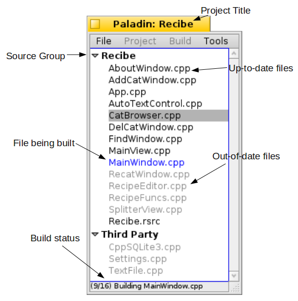
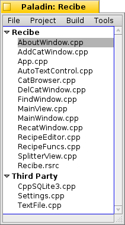
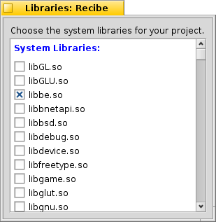
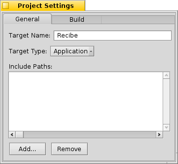
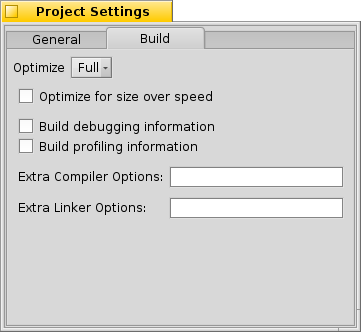
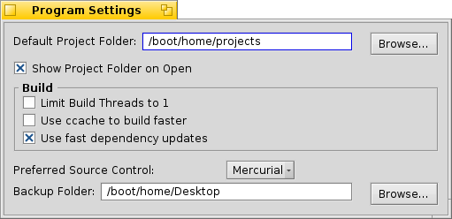
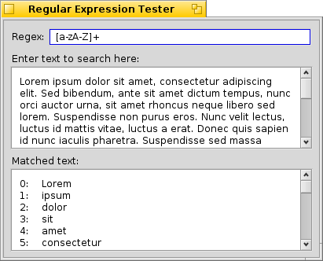

Introduction
Welcome to Paladin, the open source IDE for BeOS and Haiku! BeIDE, the venerated development environment for BeOS, was based on CodeWarrior by Metrowerks. It was a good commercial product distributed with BeOS, but with the loss of Be, Inc. it has not seen further development or changes in its licensing. Until now, there has not been a suitable replacement. Paladin is the spiritual successor to BeIDE, building upon BeIDE's features, doing away with its quirks, and streamlining C/C++ development as much as possible.As of this writing, primary development efforts have been placed on the project manager, but Paladin also has an excellent editor, PalEdit. It is based on the excellent Pe editor written by Maarten Hekkelman. As development continues, more noticeable differences between the two will be seen.
Although BeIDE was an excellent development environment for its time, its feature set is sparse for modern developers. Paladin's feature set includes:
- Full support for BeOS R5, Zeta, and Haiku
- Command-line build support
- Multithreaded builds
- Revision control-friendly project files
- More run options for projects
- Explicit support for debugging with gdb under Haiku
- Bundled helper tools
- Streamlined project settings
- Out-of-the-box support for Lex and Yacc
- Support for text and binary resource files
- Projects can include notes and other files that aren't source code
- Project templates
- Out-of-the-box makefile generation
- Integrated source code management
- 1-click project backups
Development with Paladin
Starting a New Project
When starting a new project, Paladin will need a little bit of information from you: the name and kind of project you are starting, its name, where you want to create the project's folder, and the name of the executable.
Choosing the proper project type is important – the compiler and linker use different settings for each kind of project and may produce unexpected build problems. If the Create Project Folder box is checked, your project's folder will be created in the location you choose and will have the same name as that of your project. Creating
MyProject in /boot/home/projects
will result in a project file being created in the folder
/boot/home/projects/MyProject. All project filenames are, by default,
created with the .pld extension. The Project Type menu gives you
the option to create your project from a template, saving you from retyping
the same boilerplate code each time. You can even create your own project
templates. Your project can also utilize source control. It is highly
recommended, but it is not required. Paladin currently supports the Subversion
and Mercurial tools.
The Project Window
Once a project has been created, you will be shown a project window. Depending on what project template you have chosen, the project window may or may not have files in it. From here, you will want to add some files to your project and, depending on what system components (Translation Kit, etc.) you may need to change what system libraries are used by your project. There is quite a lot of power hidden just out of sight in the project window. Let's take a quick look at it:
Not pictured above are two other types of entries: missing files and unsupported files. Missing files are listed in gray and are italicized. Files which are not associated with builds are shown as up-to-date and will otherwise be ignored. See further below for more information on supported file types.
Adding Files and Groups
Paladin supports many different kinds of files for use in projects. Adding a file to your project is as simple as dragging it to the project window and dropping it there. Alternatively, if you prefer to use a more traditional method, you can add files to your project by choosing Add Files from the Project menu.
You can also drag and drop entire a folder to add its contents to your project. Note that certain files will not be added, namely, Paladin and BeIDE projects and the folders used by the Subversion, Git, Mercurial, and CVS source control programs for holding repository information, e.g. .svn folders. Build files use by the command-line build tools jam and make are also ignored. When a folder is dropped onto the project window, each subfolder will be given its own group.
Projects have no practical limit to the number of files they can contain. As a result, having one hundred or more files is both possible and somewhat unwieldy. Although you can sort your files, you can also create groups to better organize your projects.
Removing files is just as easy. Select the files you wish to remove and either hit Alt+Delete on the keyboard or choose Remove Selected Files from the Project menu. You can even click while holding down the Shift or Alt keys to select multiple files at once.
Note: There is a known display bug in BeOS R5 and Zeta which does not properly show the keyboard shortcut for Remove Selected Files. This issue is being addressed in Haiku.
To create a group, click on a file which you would like to belong to the new group and then choose Create New Group from the Project menu. Alternatively, you can right-click on the file item and choose Create New Group. All files below your selection will also belong to this new group. To remove a group, drag all of its files to another group.
Supported File Types
All file types are identified by their extensions. Unsupported file types are ignored. This is actually a feature – you can add TODO lists, e-mails and whatever other files you might need to be associated with your project and have easy access to them. Paladin will open them with their associated editor when you double-click on them.| File Type | Associated Extensions | Associated Actions |
| C source | .c | Compile, Link |
| C++ source | .cpp, .cc, .cxx | Compile, Link |
| C header | .h | Compile, Link |
| Resource | .rdef, .rsrc | Added at the end of the build |
| Shared library | .so | Link |
| Static library | .a | Link |
| Lex | .l (letter L) | Run flex, Compile, Link |
| Yacc | .y | Run bison, Compile, Link |
| Shell script | .sh | Executed after building project |
A Note About File Paths
Paladin stores the location of your project's files when it adds them to it. Any files that are kept either in your project's folder or in a folder underneath it are stored with paths relative to the project file. Any project files that are stored somewhere else are tracked using absolute file paths. This means that you should store all of your project file at the top of the folder hierarchy for your project. This will allow you to move a project around and its files won't be suddenly missing.Using System Libraries
One notable deviation from BeIDE's workflow is how Paladin works with
libraries installed in the usual system locations, i.e.
/boot/home/config/lib and /boot/develop/lib/x86. Libraries
found here are added using a separate window. The Libraries window can be
found by choosing Change System Libraries from the Project menu.
Instead of having to manually add system libraries to your project by the
same means as all of your other files, all that is needed is to check the
entry for a particular library you wish to be linked into your project. They
are listed and grouped by order of location – all libraries kept in
/boot/develop/lib/x86 are listed first group and those stored in
/boot/home/config/lib are listed further down in the second group.
Under Haiku, three groups are used, and libraries found in
/boot/common/lib are listed in between the other two groups.
Static libraries in these locations are also listed. Should you wish to add your own static libraries to a project, simply add them to your project just like any other file and they will be linked at the proper time.
Project Settings
Most of the settings for your project can be accessed from the Project Settings window. They are divided between two tabs: the General tab and the Build tab. 
From the General tab, it is possible to change your project's target type (application, shared library, static library, kernel driver), the name of the executable that Paladin will build, and any extra include paths your project needs. Normally, it will not be necessary to change the include paths because any time a file is added to a project, its location is added to the list. Still, should the need arise, the paths can be changed.
The Build tab contains settings that you may need to change during the course of the development cycle. Compiler optimization can be set to None, Some, More, and Full. Debugging information dramatically increases the size of the executable, but it also allows the debugger to show the exact location in the original source file when stepping through – a highly valuable tool. Profiling information is for use with bprof to find out where your program spends most of its time working and is available for BeOS R5 and Zeta. In addition to these options, if there are other options you wish to include, they can be added in the text boxes provided.
Running Your Project
In addition to keyboard shortcuts to build and run your project, Paladin provides other options which speed up development. These consist of opening the debugger at the starting point of your program, running your program while logging any console printing it does, and being able to choose command-line arguments with which your program will be started.
While Paladin's target for development is Haiku, it supports Zeta and BeOS R5, as well. It supports both bdb, the BeOS debugger, and Haiku's gdb. If debugger information is not already built into the program, it will be enabled and your program will be rebuilt before being executed. You will, however, be given the option to not run in the debugger before this is done.
While it is currently not possible for Paladin to start the Terminal, have it launch your program, and then stay open after your program exits, it is nonetheless possible to obtain the benefits of doing so by choosing Run Logged. Your program will run and when it quits, Paladin will display a log of everything your program has printed to the Terminal. From there, you can peruse it at your leisure or select everything and drag it to the Desktop to save it into a file.
For easier testing of applications which can take command-line arguments, Paladin allows you to set these arguments for when your program is run. Note that these arguments are persistent and are saved from one session to another in order to save typing. Additionally, these arguments are utilized whenever your program is run from Paladin, regardless of the mode (debugger, logged, etc.).
Dealing with Errors
Not everything builds on the first try, so every developer has to deal with build errors. Paladin deals with errors in the same way that BeIDE did: displaying a window containing a list of each error given to it by the build tools. While warnings will not stop Paladin from continuing to build a project, if an error occurs, Paladin will stop the build so that the errors can be corrected. Errors are listed in pink; warnings are listed in yellow. Sometimes errors or warnings are generated that take up two lines. In these cases, one part will be in yellow and the other will merely be white. Double-clicking on an error or warning will open up the file containing it in the editor. The Copy to Clipboard button will copy all visible errors and/or warnings to the system clipboard for pasting into other documents.
Using the Integrated Source Control
Experienced developers are, by and large, familiar with using source control tools. These tools are designed to manage many developers working on the same project at the same time without stepping on each others' toes much. While these tools, also known as source control managers (SCMs), were originally designed with many developers in mind, there is little reason for a single developer to not use source control except for perhaps laziness and/or ignorance.
Many source control systems exist. The oldest are rcs and CVS. CVS is still in current use by many projects, but it is not very well loved. Subversion, abbreviated svn, was written as the proper way to implement CVS and improves upon it considerably. These SCMs are designed with a single central repository from which each developer checks in and checks out changes. More recently, many other distributed SCMs have come onto the scene. These give each developer a complete copy of the source tree, enabling a greater amount of flexibility with which to work. The most popular of these are Darcs, Bazaar, Git, and Mercurial. As of this writing, Haiku supports CVS, Subversion, Mercurial, and Git. Paladin currently supports Subversion and Mercurial with Git support coming in the very near future.
Source control in Paladin is as much the same between tools as possible. Project-wide operations, such as checking out and committing changes, can be found in the Source Control submenu of the Project menu. Operations which work on individual files are more easily accessed via the right-click context menu in the file list of the project window. The conceptual model used with Paladin's source control tools fits working with Mercurial, however Subversion will work just as well. While not all functionality of each SCM can be used from Paladin, the day-to-day operations needed will work well and will save the unfamiliar from having to learn the command-line methods until they wish to do so.
For more information on how to use source control systems in general, an excellent tutorial can be found at the Mercurial site.
Scripting with Paladin
Many graphical development environments either attempt to integrate larger script-based build solutions — such as make, jam, and others — into the environment. Far too often, though, the integration isn't done well enough to be useful to the developer. Paladin is intended to be able to handle most projects. In order to support complex build tasks, like multiple targets and targets depending on other targets, for example, would require Paladin to sacrifice much of the simplicity it provides. Instead, Paladin does the reverse: it makes itself work well within these more complex build systems. This is done with command line arguments for starting Paladin. This means of starting Paladin can also make reporting bugs in Paladin much easier.| Command | Does what |
Paladin [projectpath] |
Runs Paladin and if a project is specified, opens it. If not, the Start window is displayed. If the project desired is kept within the default projects folder used by Paladin, the name of the project can be used instead of the entire path. |
Paladin -b [-r] projectpath |
Builds the specified project and exits. Errors and warnings are printed on stderr. Adding the -r switch forces a complete rebuild. |
Paladin -d [-v] [projectpath] |
Starts Paladin in debug mode, which prints information to the console needed by Paladin's developers for handling bug reports. Adding -v generates additional information. If a project is specified, it is opened, but if not, the Start window is displayed. |
Paladin -h | Shows command line help. |
Program Settings
Seeing how not everyone works the same way, Paladin features some options to be able to customize the environment to your liking. The Program Settings window allows you to choose the place where your projects are stored and the location for project backups. For machines with more than one processor, Paladin creates one build thread for each processor to most efficiently build your projects, but if this creates problems, it can limit the number of build threads to just one.ccache is a program which speeds up
compilation and fastdep is a dependency checker which is several
orders of magnitude faster than the standard one. Tooltips are used sparingly
in Paladin, but if they annoy you, they can be turned off. When project files
are opened, Paladin can also open the folder that contains it in the Tracker
file browser. Also, if you have a preferred source control tool or would
rather not use it, you can set your preference here.
PalEdit, Paladin's Code Editor
As of this writing, there isn't much difference between PalEdit and Pe, so the documentation for Pe should be consulted for questions about its functions and features. This section will be extended as it is developed further.Appendix
Adding Your Own Project Templates
By default, Paladin comes with a small group of project templates, but it is possible — and easy — to create your own, as well. To create your own project template:- Create a new project in its own folder.
- Change the project settings to reflect your wishes.
- Add files to the project. Note that these files, including attributes, will become the basis for your project template.
- Rename the project's folder to the name you wish to use for the template.
- Move the project folder to the Templates folder where Paladin is
installed. This is usually
/boot/apps/Paladinor something similar.
Helper Tools
Developers seem to need a wide variety of tools when writing code. Paladin includes a few small accessories to complement the main development environment. They can be accessed from the Tools menu.ASCII Table
Paladin's ASCII table is pretty simple, but useful nonetheless. There are hexadecimal, octal, and decimal values for each value from 0 to 255 along with a description.License Manager
Licensing is, unfortunately, a necessary evil. To help wade through the basic differences of each license, the license manager provides a list of licenses, a plain-language summary of the license, and the full text of the license itself. Clicking on the Set License button creates a file called LICENSE in your project's folder with the text of the license you have chosen.Project Backup
Although source control is easy to come by and doesn't require much extra effort, some projects hardly seem worth setting up a full-blown source control repository. Your project can be quickly placed into a compressed archive in a folder of your choosing with your project's name and timestamp for the backup with just a click of this menu item.Regular Expression Tester
Regular expressions are both incredibly flexible and powerful. The only problem is getting them to work just right on a section of text. This window will provide the means to test a regular expression on some specified text. As a convenience, if there is text on the system clipboard when it is opened, it will start with that text as the data for the search.
If you are not familiar with regular expressions, it is highly recommended that you learn about them. They can perform searches with more flexibility than regular string searches and the basics can be learned easily enough by reading a tutorial on regular expressions.